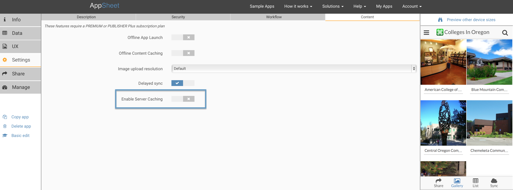

You can modify the way AppSheet caches content on both server and mobile device.
By default, AppSheet does not cache spreadsheet data on the server. However, server-side data caching can significantly improve the speed perceived by app users during a Sync. Explained in simple terms, the mobile app can get the data directly from AppSheet's servers without having to wait for the data to be fetched from the backend cloud storage platform (Google Drive, Dropbox, etc).
You can explicitly enable server-side data caching via an optional setting in the Advanced Editor>Settings>Content:  This will apply only to read-only data. The data is cached for a variable timeframe at the discretion of the server (but less than an hour). Please be aware that if the sheet has formulas, they will only be calculated when the sheet is actually fetched. As a result, you should not use server-side caching if your data has formulas that have more current content (eg: a formula that accesses an external site or utilizes the current time to compute something).